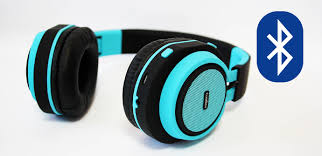

USOS
Se denomina Bluetooth al protocolo de comunicaciones diseñado especialmente para dispositivos de bajo consumo, que requieren corto alcance de emisión y basados en transceptores de bajo coste.
Los dispositivos que incorporan este protocolo pueden comunicarse entre sí cuando se encuentran dentro de su alcance. Las comunicaciones se realizan por radiofrecuencia de forma que los dispositivos no tienen que estar alineados y pueden incluso estar en habitaciones separadas si la potencia de transmisión es suficiente. Estos dispositivos se clasifican como "Clase 1", "Clase 2" o "Clase 3" o "Clase 4" en referencia a su potencia de transmisión, siendo totalmente compatibles los dispositivos de una caja de ordenador.
APLICACIONES
Conexión sin cables vía OBEX.
Transferencia de fichas de contactos, citas y recordatorios entre dispositivos vía OBEX.
Reemplazo de la tradicional comunicación por cable entre equipos GPS y equipamiento médico.
Controles remotos (tradicionalmente dominado por el infrarrojo).
Enviar pequeñas publicidades desde anunciantes a dispositivos con Bluetooth. Un negocio podría enviar publicidad a teléfonos móviles cuyo Bluetooth (los que lo posean) estuviera activado al pasar cerca.
Las consolas Sony PlayStation 3, PlayStation 4, Microsoft Xbox 360, Xbox One, Wii, Wii U y Nintendo Switch incorporan Bluetooth, lo que les permite utilizar mandos inalámbricos, aunque el Gamepad original de Wii U se conecta a la consola mediante Wi-Fi y los mandos de Wii utilizan tecnología infrarroja para la función de puntero.
Enlace inalámbrico entre sistemas de audio y los altavoces (o altoparlantes) correspondientes.
Mouse, teclados, auriculares, parlantes
Transferencia de archivos desde PC de escritorio con adaptador Bluetooth o notebook hacia/desde otros dispositivos como smartphones o celulares con bluetooth.
